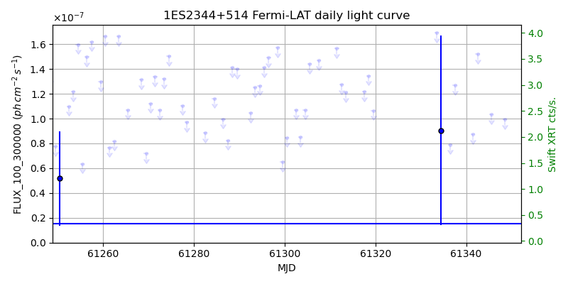
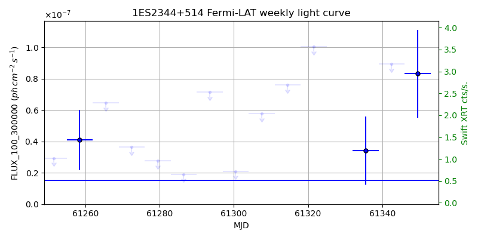
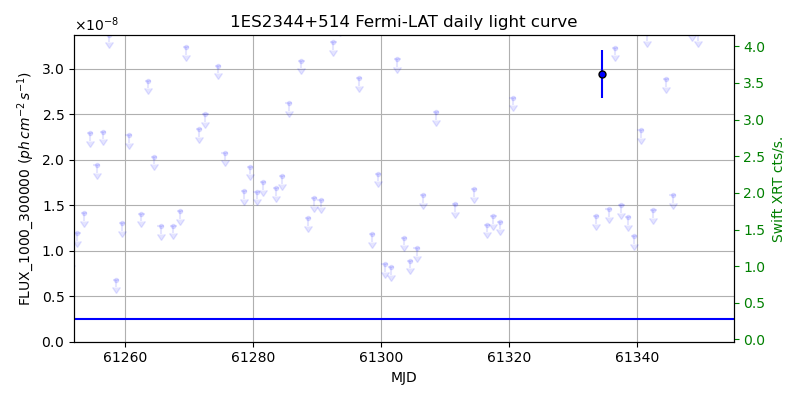
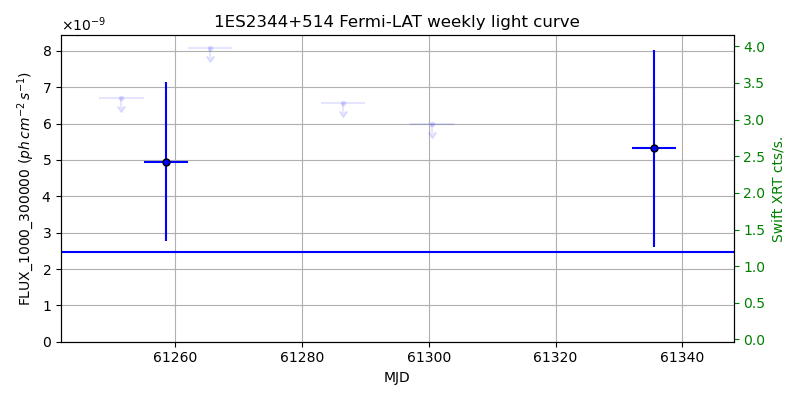

LAT Lightcurve site: https://fermi.gsfc.nasa.gov/ssc/data/access/lat/msl_lc/source/1ES_2344p514
Swift site: https://www.swift.psu.edu/monitoring/source.php?source=1ES2344+514
NED: Query
Time of last update of this page: UT: 2026-11-06 16:31 (MJD: 61350.688)
| Property | Value |
|---|---|
| R.A. | 23:47:04.80 |
| Dec. | 51:42:18.0 |
| z | 0.044 |
| 3FGL SpectrumType | PowerLaw |
| 3FGL PL Index | 1.78 |
| 3FGL Flux_100_300000 | 1.51e-08 1 / (s cm2) |
| 3FGL Flux_1000_300000 | 2.46e-09 1 / (s cm2) |
| 3FGL Flux >200 GeV | 3.83e-11 1 / (s cm2) |
| 3FGL Extrap. Crab >200 GeV | 0.16 |
| 3FGL Flux After EBL Absorption >200GeV | 2.94e-11 1 / (s cm2) |
| 3FGL EBL Crab Fraction >200GeV | 0.12 |

| MJD | dMJD | Flux | dFlux | Frac3FGL | FracCrab>200GeV | EBLFracCrab>200GeV |
|---|---|---|---|---|---|---|
| 61345.50 | 0.50 | 1.03e-07 | 0.00e+00 | 0.00 | 0.00 | 0.00 |
| 61346.50 | 0.50 | 2.60e-07 | 0.00e+00 | 0.00 | 0.00 | 0.00 |
| 61347.50 | 0.50 | 2.23e-07 | 0.00e+00 | 0.00 | 0.00 | 0.00 |
| 61348.50 | 0.50 | 9.93e-08 | 0.00e+00 | 0.00 | 0.00 | 0.00 |
| 61349.50 | 0.50 | 3.03e-07 | 0.00e+00 | 0.00 | 0.00 | 0.00 |

| MJD | dMJD | Flux | dFlux | Frac3FGL | FracCrab>200GeV | EBLFracCrab>200GeV |
|---|---|---|---|---|---|---|
| 61314.50 | 3.50 | 7.61e-08 | 0.00e+00 | 0.00 | 0.00 | 0.00 |
| 61321.50 | 3.50 | 1.00e-07 | 0.00e+00 | 0.00 | 0.00 | 0.00 |
| 61328.50 | 3.50 | 6.41e-07 | 0.00e+00 | 0.00 | 0.00 | 0.00 |
| 61335.50 | 3.50 | 3.42e-08 | 2.17e-08 | 2.27 | 0.37 | 0.28 |
| 61342.50 | 3.50 | 8.95e-08 | 0.00e+00 | 0.00 | 0.00 | 0.00 |

| MJD | dMJD | Flux | dFlux | Frac3FGL | FracCrab>200GeV | EBLFracCrab>200GeV |
|---|---|---|---|---|---|---|
| 61345.50 | 0.50 | 1.61e-08 | 0.00e+00 | 0.00 | 0.00 | 0.00 |
| 61346.50 | 0.50 | 8.74e-08 | 0.00e+00 | 0.00 | 0.00 | 0.00 |
| 61347.50 | 0.50 | 4.67e-08 | 0.00e+00 | 0.00 | 0.00 | 0.00 |
| 61348.50 | 0.50 | 3.45e-08 | 0.00e+00 | 0.00 | 0.00 | 0.00 |
| 61349.50 | 0.50 | 3.39e-08 | 0.00e+00 | 0.00 | 0.00 | 0.00 |

| MJD | dMJD | Flux | dFlux | Frac3FGL | FracCrab>200GeV | EBLFracCrab>200GeV |
|---|---|---|---|---|---|---|
| 61314.50 | 3.50 | 1.39e-08 | 0.00e+00 | 0.00 | 0.00 | 0.00 |
| 61321.50 | 3.50 | 9.29e-09 | 0.00e+00 | 0.00 | 0.00 | 0.00 |
| 61328.50 | 3.50 | 2.29e-08 | 0.00e+00 | 0.00 | 0.00 | 0.00 |
| 61335.50 | 3.50 | 5.32e-09 | 2.71e-09 | 2.16 | 0.36 | 0.28 |
| 61342.50 | 3.50 | 1.03e-08 | 0.00e+00 | 0.00 | 0.00 | 0.00 |
--------------------------------------------------------- Using user-supplied coords: 23:47:04.80 51:42:18.0 2000 --------------------------------------------------------- FLWO UT night of: 2026-11-07 Local Sid. @ Midnight: 02:42 Sunset (-15.0) (local, UT): 18:39 01:39 Sunrise (-15.0) (local, UT): 05:36 12:36 Moonrise (local, UT): 05:16 12:16 Moonset (local, UT): Moon phase: 0.04 --------------------------------------------------------- AzTime LSID UT Obj_el Obj_az Mn_el Mn_az Sep. --------------------------------------------------------- 18:39 21:20 01:39 56.4 42.2 -35.5 278.9 137.0 19:09 21:50 02:09 60.5 38.2 -41.6 283.5 137.0 19:39 22:20 02:39 64.2 32.1 -47.5 288.8 137.0 20:09 22:50 03:09 67.2 23.5 -53.3 295.3 137.0 20:39 23:20 03:39 69.2 12.1 -58.7 303.4 137.0 21:09 23:50 04:09 69.8 359.0 -63.5 313.9 137.0 21:39 00:20 04:39 69.0 346.0 -67.5 328.0 137.0 22:09 00:50 05:09 66.8 335.0 -70.0 346.2 137.0 22:39 01:20 05:39 63.7 326.8 -70.5 6.9 137.0 23:09 01:51 06:09 59.9 321.1 -68.8 26.6 137.0 23:39 02:21 06:39 55.7 317.4 -65.4 42.5 137.0 00:09 02:51 07:09 51.3 315.1 -60.9 54.4 137.0 00:39 03:21 07:39 46.7 313.9 -55.8 63.5 137.0 01:09 03:51 08:09 42.1 313.5 -50.2 70.6 137.0 01:39 04:21 08:39 37.4 313.8 -44.4 76.4 137.0 02:09 04:51 09:09 32.9 314.6 -38.4 81.4 137.0 02:39 05:21 09:39 28.3 315.8 -32.4 85.8 137.1 03:09 05:51 10:09 24.0 317.5 -26.3 89.9 137.1 03:39 06:21 10:39 19.7 319.5 -20.2 93.7 137.1 04:09 06:51 11:09 15.7 321.9 -14.2 97.5 137.1 04:39 07:21 11:39 11.9 324.6 -8.1 101.2 137.1 05:09 07:52 12:09 8.3 327.6 -1.2 105.0 137.2 05:36 08:19 12:36 5.4 330.6 3.4 108.6 137.2 --------------------------------------------------------- Dark hours >55 deg.: 5.08 srcstart (UT): 2026-11-07 01:38 srcend (UT): 2026-11-07 06:43